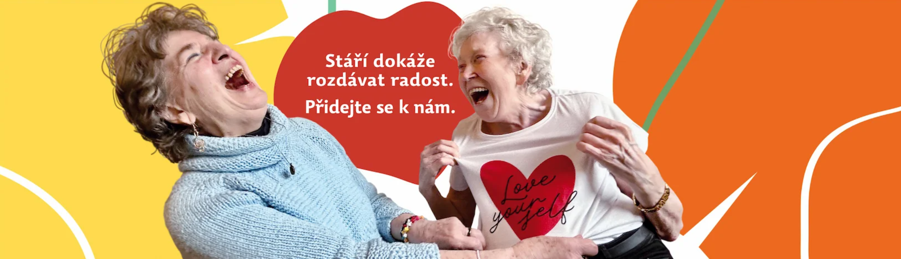
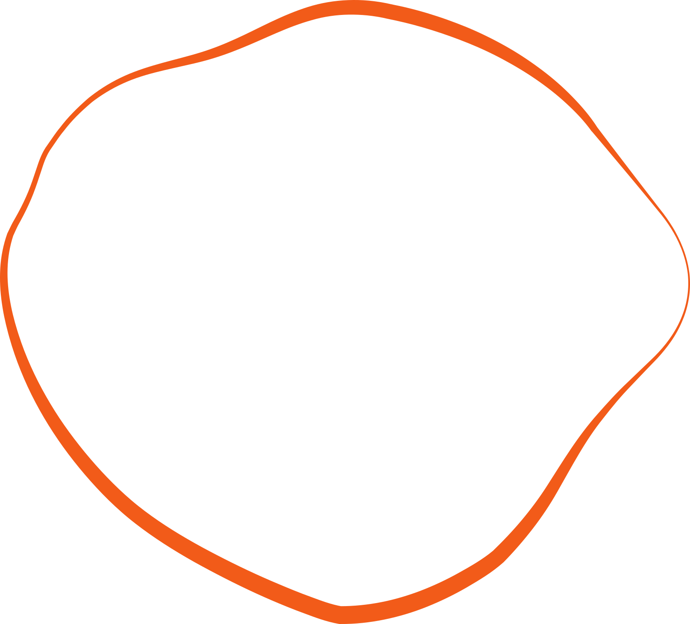

Staň se dobrovolníkem Letokruhu a rozdávej radost druhým i sobě.
Prohlédněte si aktuální poptávky po dobrovolnících.
| Název aktivity | Popis aktivity | Lokalita | Četnost |
|---|---|---|---|
| Společnice / společník pro seniorku v Dejvicích |
Pro velmi milou seniorku se zbytky zraku hledáme oporu při procházkách po okolí...
...více ZDE
|
Praha 6 – Dejvice (Evropská)
|
1× týdně |
| Společník/společnice pro seniorský klub v Michelské |
Hledáme přátelského dobrovolníka pro povídání a asistenci u klubových aktivit...
...více ZDE
|
Praha 4 – Michelská
|
1× týdně / 14 dní |
| Lektor/ka počítačů a smartphonů na Bořislavce |
Pomoc seniorům s ovládáním dotykových telefonů a tabletů...
...více ZDE
|
Praha 6 – Bořislavka
|
Dle možností |
